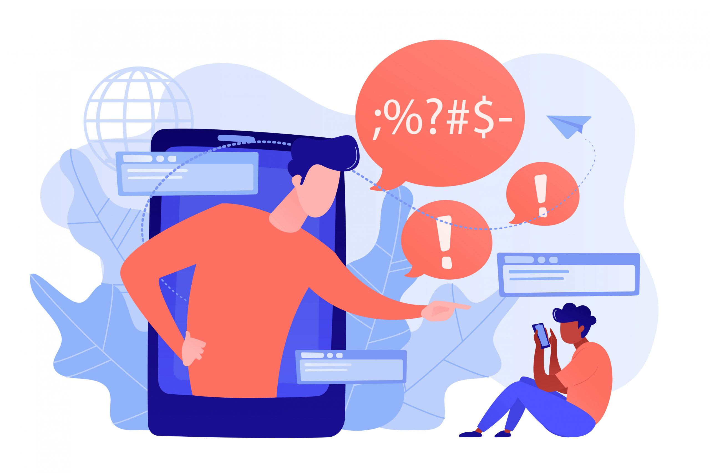

O cyberbullying é um tipo de assédio moral que ocorre através de meios digitais, como redes sociais, aplicativos de mensagens, fóruns ou qualquer outra plataforma online. Dentro desse contexto, a injúria é um dos atos mais comuns de bullying online, e envolve o uso de palavras ou mensagens para ofender, insultar ou denegrir a honra ou a dignidade de uma pessoa.
Comentários Ofensivos: Mensagens, posts ou comentários que insultam diretamente uma pessoa, atacando aspectos como aparência, raça, etnia, gênero, orientação sexual ou qualquer característica pessoal.
Memes ou Imagens Degradantes: A criação e compartilhamento de memes ou imagens que ridicularizam ou zombam de alguém de forma ofensiva.
Mensagens Privadas Abusivas: Envio de mensagens diretas ou privadas contendo insultos, humilhações ou xingamentos com o objetivo de ferir emocionalmente a pessoa.
Exposição Pública de Defeitos ou Situações Constrangedoras: Publicação de conteúdos que, mesmo sendo verdadeiros, são divulgados com o intuito de ofender ou humilhar a vítima.
Redes Sociais: Um usuário faz uma postagem em uma rede social insultando outra pessoa, dizendo algo como: "Você é um idiota, ninguém gosta de você".
Grupos de Mensagens: Em um grupo de mensagens instantâneas, alguém compartilha uma mensagem chamando outro participante de "incapaz", "feio", ou outro termo ofensivo.
Jogos Online: Durante uma partida, um jogador ofende outro com palavras de baixo calão ou insultos pessoais, como comentários sobre a aparência ou a capacidade do jogador.
A injúria no cyberbullying é uma prática que envolve a utilização de insultos e ofensas para humilhar ou denegrir a dignidade de alguém no ambiente digital. Esse tipo de ataque pode causar danos emocionais profundos, levando a consequências graves como ansiedade, depressão e isolamento. Felizmente, as leis protegem as vítimas, e existem recursos tanto legais quanto psicológicos para lidar com os efeitos desse tipo de abuso. A conscientização, o respeito e o uso adequado das ferramentas online são fundamentais para prevenir o cyberbullying e suas consequências.